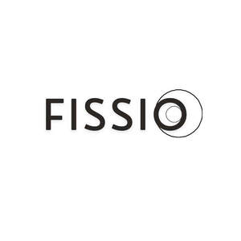

Trade Mark Journal No.2026/007 13 February 2026
UK00004330376 27 January 2026 (5,35)

- Class 5
- Diet capsules; Food supplements for dietetic use; Food supplements; Vitamin supplements for animals; Vitamin preparations in the nature of food supplements; Nutraceuticals for use as a dietary supplement; Vitamin and mineral supplements for pets; Mineral dietary supplements for humans; Mineral dietary supplements for animals; Liquid vitamin supplements; Dietary supplements promoting fitness and endurance; Liquid nutritional supplements; Dietary supplements in powder form; Dietary supplements for pets; Probiotic supplements; Liquid herbal supplements; Fibre (Dietary -); Dietary supplements for humans not for medical purposes; Dietary supplements for human beings; Liquid dietary supplements; Dietary supplements for human beings and animals; Dietary supplements consisting of vitamins; Nutritional supplements consisting primarily of iron; Dietary supplement drink mixes; Dietary supplements with a cosmetic effect; Multivitamins; Nutritional supplements consisting primarily of zinc; Dietary food supplements; Nutritional supplements consisting primarily of magnesium; Nutritional supplement meal replacement bars for boosting energy.
- Class 35
- Retail services connected with the sale of subscription boxes containing food; Retail purposes (Presentation of goods on communication media, for -); Business project management; Business management of retail outlets; Business data analysis; Mail order retail services related to foodstuffs; Product demonstration services in shop windows by live models; Wholesale services in relation to dietary supplements; Providing a directory of third party web sites to facilitate business transactions; Dissemination of advertising material; Business information services; Dissemination of advertising materials; Business information (Provision of -); Arranging and conducting of displays for advertising purposes; Promotional services; Retail services in relation to dietary supplements; Promotional marketing; Organisation of trade fairs for advertising purposes; Services rendered by a franchisor, namely, assistance in the running or management of industrial or commercial enterprises; Promotional management of celebrities; Mail-order advertising; Business information and research services; Administration relating to sales methods; Services of advertising agencies; Organisation of trade fairs for commercial or advertising purposes; Display services for merchandise; Compilation of business directories for publishing on the Internet; Business information and inquiries; Arranging and conducting commercial trade shows; Administration relating to business appraisal.
FISSIO LIMITED
Representative: YH Consulting Limited